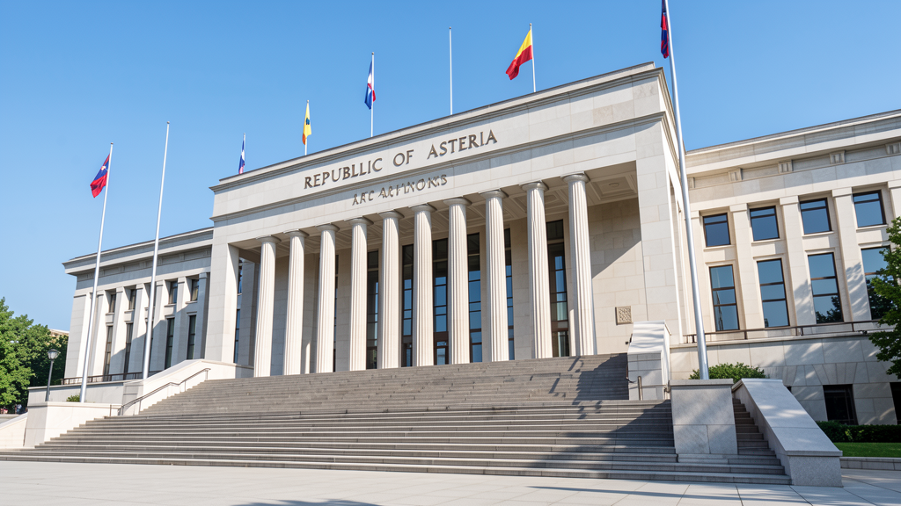

Gobierno y Sociedad
Sistema político
República semipresidencialista unitaria. El pueblo elige al presidente cada cinco años para un máximo de dos mandatos. El Primer Ministro, jefe de Gobierno, es designado por el Parlamento. La Asamblea de los Distritos, con 120 escaños, representa proporcionalmente a cada región.

El sistema combina estabilidad ejecutiva con control parlamentario, lo que ha permitido a Asteria mantener gobiernos mayoritarios sin interrupciones democráticas desde 1989.
Constitución Básica — 5 leyes fundamentales
- Ley de Libertad Individual: derecho a la vida, educación gratuita y sanidad universal.
- Ley de la Tierra: el suelo es patrimonio nacional; su explotación requiere evaluación de impacto ambiental.
- Ley de Saber Abierto: la investigación científica es financiada por el Estado y sus resultados son de dominio público.
- Ley de Neutralidad Activa: Asteria no se alinea en bloques militares; promueve la mediación diplomática.
- Ley de Derechos Digitales: acceso a Internet como servicio público; protección de datos personales; neutralidad de la red.
Derechos principales
- Voto universal desde los 16 años.
- Libertad de expresión, reunión y asociación.
- Protección contra la discriminación por origen, género, orientación sexual o discapacidad.
- Derecho a una vivienda digna (programa estatal de alquiler social).
- Derecho al «ousseau digital»: herramientas gratuitas en bibliotecas públicas.